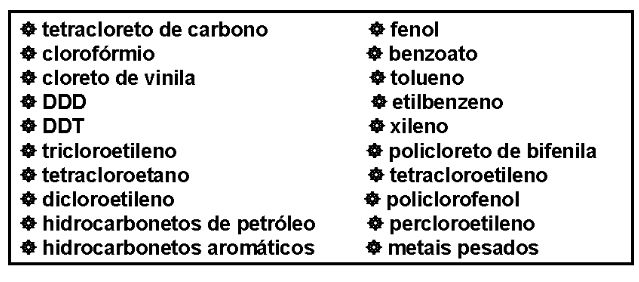
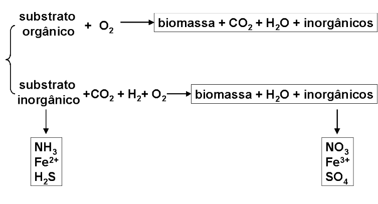

54 Biorremediação
54.1 Introdução
Atenuação ou remediação ambiental é o processo de remoção de detritos em sítios ou reservas hídricas contaminadas. Os diversos tipos de atenuação ambiental possuem etiologia física, química ou biológica. Os mecanismos físicos espontâneos de remediação ambiental intrínseca podem ser dos mais variados. Um contaminante pode se dispersar, difundir através do solo ou de ambientes aquosos, tornar-se diluido, ou evaporar.
Um contaminante também pode ser adsorvido junto à partículas do solo. Todos esses processos reduzem a concentração do contaminante sem modificações em sua natureza química. Os mecanismos químicos de degradação de poluentes, por sua vez, constituem processos de transformação química daqueles em compostos inócuos ou de menor toxicidade ambiental. Paralelamente aos processos físico-químicos de limpeza ambiental, existem os processos biológicos. Estes, normalmente realizados por microorganismos ou por algumas espécies vegetais, valem-se da rede metabólica intrínseca dos organismos para transformações químicas catalisadas por algumas de suas enzimas constituintes.
Neste sentido, o mecanismo de cura ou atenuação ambiental é denominado por bioremediação. Por conceito, a bioremediação é o processo pelo qual organismos vivos atuam na degradação ou transformação de compostos de toxicidade relevante ao ambiente. Sua variante conduzida por algumas espécies vegetais é denominada por fitoremediação.

54.2 Detalhes
Os princípios da bioremediação levam em conta quem degrada, como degrada, por quê degrada, onde degrada, e quais as variantes experimentais sujeitas no processo de degradação.
Quem degrada: essencialmente, bactérias aeróbicas e anaeróbicas, fungos decompositores e algumas espécies vegetais.
Por quê degrada: para que se possibilite, em menor ou maior escala, o desaparecimento de resíduos tóxicos que podem sofrer bioacumulação ambiental, gerando consequências de âmbito ecológico, financeiro, e de saúde.
Onde degrada: áreas ambientais (rios, lagos, lagunas, mares, solos, vegetação, áreas de cultivo, aterro sanitário, lagoas de decantação, etc) contaminadas por produtos químicos, tais como hidrocarbonetos, combustíveis, compostos halogênicos alifáticos e aromáticos, aminas tóxicas, metais pesados (Mn, Hg, Se, As, Cr), e radionucleotídios.
Os alvos da biorremeidação estão sujeitos à variabilidades ambientais, tais como temperatura, período de atuação, estados de mineralização, pH, cepas de microorganismos, aeração, biomassa empregada, quantidade de detritos, entre outros.
A perspectiva histórica da bioremediação se inicia, e é pontuada, por diversos acidentes de natureza ecológica que vêm ocorrendo desde 1940.

A bioremediação trabalha pela máxima de que seus agentes se alimentam do contaminante até a exaustão deste. Os microorganismos necessitam de certos limites de tensão de oxigênio, água, nutrimentos e contaminantes, para a otimização da produção de energia para os mesmos. A disponibilidade de oxigênio é frequentemente um fator crítico para processos de bioremediação.
54.2.1 Vantagens e Desvantagens da Bioremediação
54.2.1.1 Vantagens:
- Contaminantes são transformados em bioprodutos menos tóxicos que sua matéria-prima
- Não exclui outros processos concomitantes de remediação ambiental
- Tem probabilidade reduzida de transferir contaminantes para a atmosfera, em relação a outros processos
- É relativamente menos dispendiosa do que outros processos de remediação Desvantagens:
- É sujeita à alterações hidrogeológicas além do controle de engenharia ambiental.
- Não possui período de atuação definido, podendo não ser efetiva sob grandes períodos de tempo
A bioremediação e fitoremediação atingem hoje as mais diversas áreas da biosciências e engenharia. O propósito deste módulo é o de apresentar o que vem sendo feito nos últimos anos na área biológica da bioremediação. Neste sentido, existem hoje inúmeras empresas de biotecnologia que, juntamente com centros de pesquisa avançada, vêm isolando, caracterizando, modificando e empregando microorganismos potenciais para bioremediação.
Dentre os diversos trabalhos em biorremediação destacam-se o desenvolvimento de bioreatores aprimorados, métodos para identificação residual in situ, procedimentos para monitoramento do processo de bioxidação, desenvolvimento de bactérias engenheiradas, desenvolvimento de biosensores, biocarreadores, bioemulsificadores, e estudos de validação de ecosistemas artificiais para uso em estações espaciais. Em comum à grande maioria dos trabalhos, estão três alvos principais da bioremediação: água, solo e químicos.
54.2.2 Organismos
Conforme mencionado no início deste programa, os principais representantes bióticos utilizados na remediação ambiental pertencem aos grupos das bactérias, fungos e plantas verdes. Os processos bioquímicos que ocorrem nestes seres vivos, em presença de substratos energéticos, não é diferente daquele que ocorre em presença de resíduos tóxicos, à excessão de organismos geneticamente modificados. Em suma, para o organismo utilizado, lixo não é diferente de alimento, em termos nutricionais e energéticos.
A maneira pela qual um organismo consegue extrair energia química de compostos, quer tóxicos ao Homem ou não, passa por uma maquinaria enzimática específica, envolvendo um grande número de reações químicas por esta catalisada, e cujo objetivo primordial é a manutenção de processos vitais singulares. Esses processos icluem transporte de nutrimentos, reprodução, transcrição, tradução, metabolismo intermediário, mitose, meiose, conjugação, etc.
Na verdade, o que diferencia se um organismo irá quebrar uma molécula de glicose para produzir ATP, ácidos orgânicos, dióxido de carbono e água, ou se vai quebrar um hidrocarboneto aromático tóxico, para fins similares, mas com bioprodutos distintos, é a disponibilidade do substrato, juntamente com a permissibilidade de parâmetros da maquinaria enzimática supramencionada, tais como o teor de enzimas específicas, a temperatura, e o pH da reação, dentre outros.

54.2.3 Biotecnologia
Diversos são os procedimentos para a bioremediação de sítios, mananciais, e áreas poluídas, todos eles dependentes de inúmeros fatores. Esses fatores constituem, por exemplo, o tipo e teor do contaminante em questão, o(s) microorganimo(s) ou vegetal (utilizado(s) e sua quantidade, além de parâmetros inerentes ao local contaminado (umidade e permeabilidade do solo, por exemplo).
Além disso, deve-se sempre ter em mente que o melhor tratamento de remediação biológica é aquele que equilibra eficiência e custos. Abaixo segue uma lista contendo os pricipais procedimentos em bioremediação, juntamente com textos sugeridos para leitura.
54.2.4 Estratégias Empregadas em Bioremediação
Bombeamento de ar (bioventilação) e nutrimentos | Aumenta o processo digestório por bioremediadores, uma vez que aumenta a taxa de difusão e oxigenação da área a ser remediada. Os nutrimentos podem vir a ser desde peróxido de hidrogênio, até vinagre e leveduras.
Administração de espuma e surfactantes. | O teor de contaminantes pode ser limitante para a bioremediação. Quando em excesso, os rejeitos tóxicos podem destruir os bioremediadores. Neste caso, procede-se uma redução do teor de toxicidade através da injeção de espuma e de surfactantes, o que possibilita uma difusão de contaminantes compatível com a digestão.
Extração a vapor, bombeamento de rejeitos, lavagem in-situ. | Processos de redução de concentração que envolvem lavagem do sítio contaminado. Em todos ocorre a injeção e extração de rejeitos por lavagens que possibilitam um redução do teor de contaminantes para áreas de menor concentração dos mesmos. Todas as técnicas são bem sucedidas, uma vez que permitem um fluxo contínuo de nutrimentos, água, ou calor, para o sistema solo-contaminante-microorganismo, auxiliando o crescimento microbiano.
4.Escavação, compostagem. | Processos utilizados frente à grandes concentrações de contaminantes. Ambos incluem um tratamento de superfície do solo em diferentes profundidades, com o a área contaminada revolvida juntamente com outros resíduos orgânicos, tais como milho, trigo ou tomate.
Biopilha. | Sistema semelhante à compostagem, a biopilha assemelha-se a um reator onde se pode controlar o teor de produtos voláteis e a ventilação.
Tratamento enzimático. | Existe uma variedade grande de enzimas que podem ser utilizadas em remediação, como redutases e peroxidases, que podem oxidar compostos aromáticos.
Tratamento com fungos decompositores. | Algumas cepas de basidiomicetos são capazes de degradar lignina, celulose e hemicelulose, tornando-se efetivas para a biodegradação compostos aromáticos de estrutura similar à lignina.
Bioreatores. | Bioreatores são estruturas de contenção onde se estabelece um processo trifásico (sólido-líquido-vapor) que auxilia a biodegradação de colônias endógenas ou introduzidas.
Bioengenharia. | Organismos geneticamente modificados (OGMs) podem ser utilizados para a limpeza de áreas contaminadas virtualmente por qualquer composto, como metais pesados, químicos, e radionucleotídeos. No entanto, o progresso da bioengenharia de organismos encontra limitações éticas relativas à liberação ambiental de organismos não pertencentes originariamente ao ecossistema.